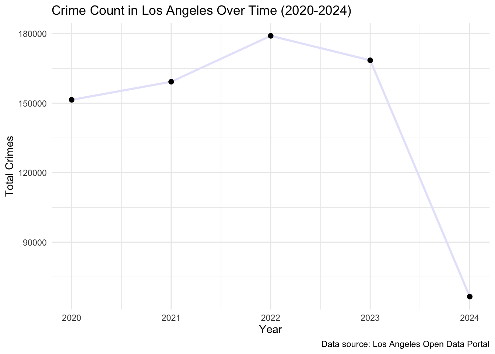
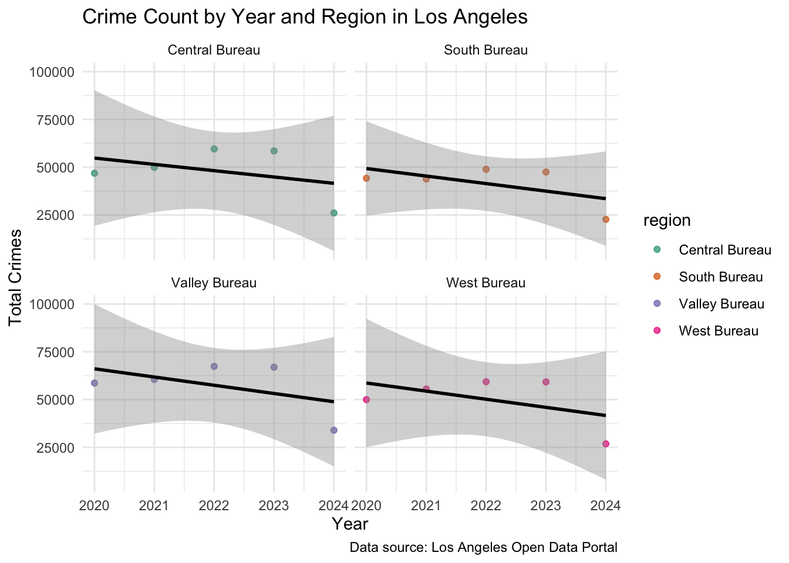
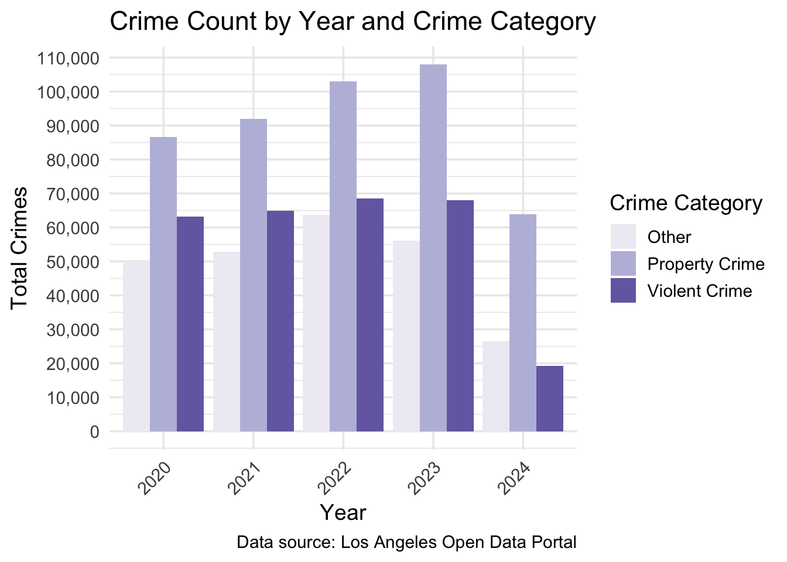
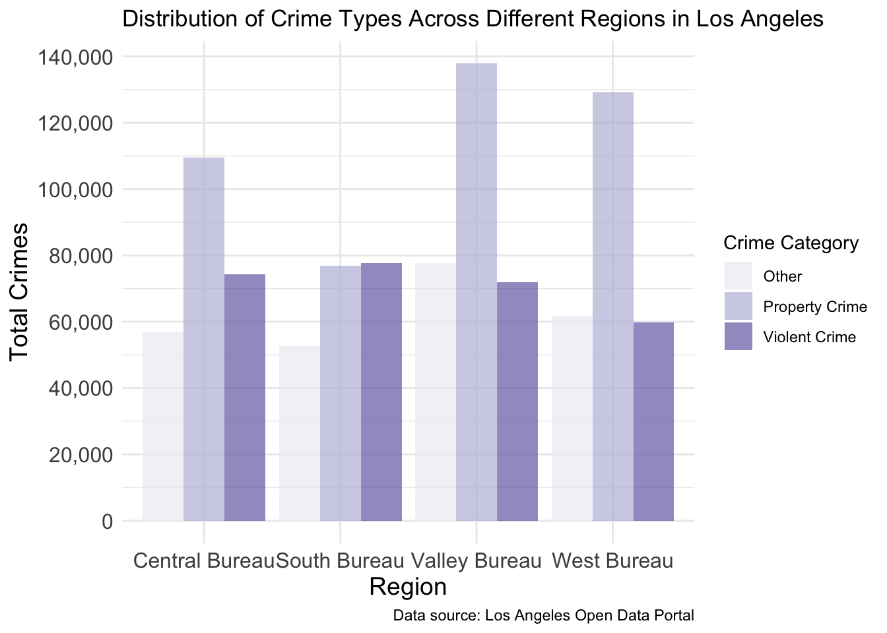

Primary Questions of Interest
How have crime rates changed across different geographic areas in Los Angeles (LA) from 2020 to 2024, and what trends can be observed in terms of the age, sex, and descent of victims?
Los Angeles (LA), a sprawling metropolis known for its diversity and global cultural influence, has a complex history of crime that has evolved alongside the city’s rapid growth. From the early 20th century, when organized crime syndicates and Prohibition-era bootlegging plagued its streets, to the racially charged tensions and gang violence that emerged in the post-World War II period, LA’s criminal landscape has mirrored the social, economic, and demographic changes of the city.
At the center of this history is the Los Angeles Police Department (LAPD), which has faced its own challenges. The LAPD has a complex history shaped by corruption scandals, strained community relations, and efforts at reform. From the 1950s through the 1990s, LAPD leadership emphasized professional policing but often operated in isolation from democratic regulation and community relationships, particularly in marginalized areas like South LA. High-profile incidents such as the Rodney King beating in 1991 and the Rampart corruption scandal in the late 1990s exposed systemic issues within the department, prompting significant reforms aimed at fostering community policing and improving transparency by allowing the public to access real-time information. Apps such as Citizen and platforms like the USC Department of Public Safety’s Crime Alerts are key tools in this shift and have prompted this analysis.
In light of this backdrop, this analysis uses the LAPD’s Crime Data from 2020 to the present to explore crime incidence and distribution across LA. The dataset provides a comprehensive view of reported crimes, offering insights into trends by geographic areas, crime types, and victim demographics. This analysis aims to shed light on how crime is evolving in the city and to better understand the distribution and impact of crime in different communities.
How have crime rates changed across different geographic areas in Los Angeles (LA) from 2020 to 2024, and what trends can be observed in terms of the age, sex, and descent of victims?
The data used for this analysis was obtained from the Los Angeles Open Data Portal, specifically the “Crime Data from 2020 to Present” dataset. This dataset is maintained by the LAPD and provides comprehensive records of crime incidents reported in the city since 2020. Accessing the data involved navigating to the Public Safety section of the Los Angeles City Data Catalog where the dataset is publicly available for download. The data was exported as a CSV file, which was subsequently imported into R for further analysis and exploration. This dataset was chosen for its breadth of information, allowing for detailed analysis of crime incidence and distribution in LA, which is pertinent to understanding public safety in the area.
In this dataset, 986,500 observations (rows) of 28 variables (columns) capture details about crime incidents in the LA area. Each row represents an individual crime incident, and the variables include details such as the crime type, area name, and geographic coordinates, as well as key victim details such as age, sex, and descent. The dataset also includes timestamps and codes related to the modus operandi, which enable an in-depth analysis of crime patterns, regional concentrations, and demographic trends in the 2020-2024 timeframe under study.
To clean and prepare the crime dataset for analysis, several steps were taken to ensure the data was clear, interpretable, and ready for data analysis. Upon loading the dataset, an initial exploration was performed, which involved checking the dataset’s dimensions, inspecting the names and types of variables, and checking for any missing cases among the variables of interest. Next, I specified the variables of interest for further analysis, including DATE.OCC (date crime occurred), TIME.OCC (time crime occured), AREA (area code), AREA.NAME (area name), Crm.Cd (crime code), Vict.Age (age of victim), Vict.Sex (sex of victim), and Vict.Descent (descent of victim). I conducted a missing value analysis for these variables to ensure data integrity, with results presented in a summary table. I noted that the crime codes Crm.Cd.1 through Crm.Cd.4 had substantial missing values, with Crm.Cd.1 showing only 11 missing entries, while the others had missing values exceeding 900,000. Given that these variables would not contribute meaningful insights into crime severity trends, I excluded them from my analysis.
Subsequent data wrangling involved converting the DATE.OCC variable to a date-time object and extracting the year. I defined specific crime codes for violent and property crimes, creating categorical variables to classify crime types and categorized crmes with codes tat were not specified in the dataset manual as “other” to account for all crimes reported. The Vict.Age variable was recoded to indicate no victim involved when the age was zero, leading to the creation of a new variable that distinguished between cases with and without a victim. Additionally, I established age categories to account for the variability in victim ages, and recoded the descent and sex variables into clearer categories. To group areas into broader regions, I categorized the AREA.NAME variable into specific bureaus based on LAPD crime mapping.
Throughout the cleaning process, I updated the list of variables of interest, removing any variables that were irrelevant or had excessive missing values, particularly those related to additional crime codes that provided no insightful information regarding crime severity trends. The final dataset included the following variables of interest: crime code, year, crime category, specific crime category, victim involvement, victim sex, region, victim descent, and victim age.
I addressed implausible values during the cleaning phase, filtering out any entries where Victim_Age was less than 0 or greater than 99. The cleaned dataset contained 986,367 observations and 11 variables. I confirmed the categorization of crimes and other attributes, noting that the missing values primarily occurred for cases where the age was recorded as zero, indicating no victim was involved.
To analyze crime trends in LA from 2020 to 2024, I summarized key variables using descriptive statistics compiled into tables for clear visualization. I addressed the primary research question by displaying the total crime count for each year from 2020 to 2024, including percent change year-over-year (Table 1). Next, I focused on the geographic distribution of crimes (Table 2). I computed the total crime count for each area, allowing me to identify regions with the highest and lowest crime counts By organizing this data by region, I could visualize how crime was concentrated in specific areas and track changes over time. Lastly, I examined victim demographics. I calculated counts given the nature of the outcome variable, observing patterns in victim age group (Table 3), descent (Table 4), and sex (Table 5) to see if certain demographic groups were disproportionately affected by crimes in LA between the years 2020 and 2024.
| Year | Crime Count | Percent Change (%) |
|---|---|---|
| 2020 | 199755 | NA |
| 2021 | 209763 | 5.01 |
| 2022 | 235140 | 12.10 |
| 2023 | 232163 | -1.27 |
| 2024 | 109546 | -52.82 |
As shown in Table 1, the total crime count increased from 199,755 in 2020 to a peak of 235,140 in 2022, before experiencing a notable decline in subsequent years, particularly a drastic decrease of 52.82% in 2024.
| Region | Crime Count | Average Crime Count |
|---|---|---|
| Central Bureau | 240883 | 48176.6 |
| South Bureau | 207136 | 41427.2 |
| Valley Bureau | 287462 | 57492.4 |
| West Bureau | 250886 | 50177.2 |
Table 2 indicates that the Valley Bureau recorded the highest total crime count of 287,462, while the South Bureau had the lowest average crime count, suggesting geographical disparities in crime distribution.
| Age Group | Crime Count |
|---|---|
| Child (1-12) | 8248 |
| Teen (13-18) | 23183 |
| Young Adult (19-25) | 106174 |
| Adult (26-35) | 204506 |
| Middle-Aged (36-50) | 208459 |
| Senior (51-65) | 125216 |
| Elderly (66-99) | 49160 |
The age distribution of crime victims, detailed in Table 3, highlights that middle-aged individuals (ages 36-50) are the most frequently victimized age group, with 208,459 incidents reported, followed closely by adults (ages 26-35) at 204,506. Collectively, these two age groups account for over 412,000 crimes.
| Victim Descent | Crime Count |
|---|---|
| Hispanic/Latino/Mexican | 288250 |
| White | 183155 |
| Black | 132896 |
| Other | 63761 |
| Other Asian | 20746 |
| Unknown | 16640 |
| Korean | 5692 |
| Filipino | 4572 |
| Chinese | 4323 |
| Japanese | 1503 |
| Vietnamese | 1122 |
| American Indian/Alaskan Native | 979 |
| Asian Indian | 537 |
| Pacific Islander | 278 |
| Hawaiian | 177 |
| Cambodian | 88 |
| Laotian | 73 |
| Guamanian | 72 |
| Samoan | 50 |
| Unspecified | 32 |
In terms of victim descent, Table 4 illustrates that Hispanic/Latino/Mexican individuals represent the largest group of victims, with a total of 288,250 crimes reported, followed by White and Black victims.
| Victim Sex | Crime Count |
|---|---|
| Male | 364857 |
| Female | 349829 |
| Other | 10119 |
| Unknown | 141 |
Table 5 reveals a slight male predominance among crime victims, with 364,857 male victims compared to 349,829 female victims, while the number of victims classified as “Other” or “Unknown” remains relatively low.

Figure 1 graphically represents the trends described in Table 1, which summarizes the crime count and percent change for Los Angeles from 2020 to 2024. As shown in the table, crime rates rose steadily from 199,755 in 2020 to a peak of 235,140 in 2022, reflecting a 12.1% increase in that year alone. This upward trend is captured in the line chart, where crime levels rise continuously through 2022. However, the decline in crime becomes more apparent in 2023, with a modest decrease of 1.27%. Both the table and figure highlight the most dramatic shift in 2024, where the crime count dropped by 52.82%, reaching 109,546. The sudden and steep decline shown in the chart aligns with the table’s data, indicating a sharp reduction in criminal activity in 2024 compared to previous years.
`geom_smooth()` using formula = 'y ~ x'
Figure 2 highlights the yearly crime trends across four regions in Los Angeles—Central Bureau, South Bureau, Valley Bureau, and West Bureau—from 2020 to 2024. Each region shows a slight downward trend in total crime over time, as indicated by the black trend lines. The Valley Bureau consistently records the highest crime counts, exceeding 75,000, while the West Bureau has the lowest, staying below 50,000. Both the Central and South Bureaus exhibit moderate crime levels, with small fluctuations but a general decline over the five years.

Figure 3 illustrates the distribution of total crimes in Los Angeles across three categories—Other, Property Crime, and Violent Crime—from 2020 to 2024. Property and violent crimes exhibit relatively stable trends from 2020 to 2023, with both categories consistently contributing large portions of total crimes each year. However, in 2024, there is a sharp decline across all categories, with “Other” crimes experiencing the steepest drop.
Property crimes generally account for the highest crime counts each year, followed by violent crimes, which maintain a steady but slightly lower contribution. “Other” crimes consistently show lower counts compared to the other categories. The data suggests that crime rates were stable until 2023, after which all categories saw significant reductions, particularly in 2024.

Figure 4 shows the distribution of Property Crime, Violent Crime, and Other Crimes across four regions in Los Angeles. Property Crime is the most common category, with the Valley Bureau reporting the highest count and the South Bureau the lowest. Violent Crime is relatively consistent, with the South Bureau leading and the West Bureau reporting the fewest. Other Crimes are highest in the Valley Bureau and lowest in the South Bureau. Overall, the Valley Bureau has the highest crime counts across all categories.
| Crime Category | Central Bureau | South Bureau | Valley Bureau | West Bureau |
|---|---|---|---|---|
| Property Crime | 109578 | 76806 | 137828 | 129152 |
| Violent Crime | 74366 | 77755 | 71914 | 59861 |
| Other | 56939 | 52575 | 77720 | 61873 |
Table 6 highlights that the Valley Bureau reports the highest crime counts across all categories, with 137,828 property crimes, 71,914 violent crimes, and 77,720 other crimes.
| Area Name | Crime Count |
|---|---|
| N Hollywood | 50193 |
| Van Nuys | 42052 |
| West Valley | 41443 |
| Devonshire | 40972 |
| Topanga | 40586 |
| Mission | 39571 |
| Foothill | 32645 |
Given the highest total crime count is in the valley bureau, Table 7 presents area-specific crime counts within the bureau. This table shows that North Hollywood has the highest crime count (50,193), followed by Van Nuys (42,052) and West Valley (41,443). Other areas, such as Devonshire (40,972), Topanga (40,586), Mission (39,571), and Foothill (32,645), also contribute significantly to the overall crime in the region.
| Specific Crime Category | 2020 | 2021 | 2022 | 2023 | 2024 | Percent Change (%) |
|---|---|---|---|---|---|---|
| Aggravated Assault | 18562 | 20080 | 20175 | 20002 | 5569 | -70.00 |
| Homicide | 356 | 402 | 392 | 330 | 94 | -73.60 |
| Rape | 1588 | 1641 | 1618 | 1446 | 328 | -79.35 |
| Robbery | 8019 | 8499 | 9118 | 8686 | 2728 | -65.98 |
| Simple Assault | 34607 | 34355 | 37200 | 37578 | 10523 | -69.59 |
Table 8 shows a significant decline across all categories of violent crime from 2020 to 2024. The most dramatic reduction is seen in rape cases, which dropped by 79.35%, followed by homicides with a 73.60% decrease. Aggravated assault and simple assault also fell sharply by 70.00% and 69.59%, respectively. Robbery experienced the least reduction but still declined substantially by 65.98%. Overall, the data reveals a consistent downward trend in violent crimes, with each category experiencing a decrease of over 65% by 2024.
| Specific Crime Category | 2020 | 2021 | 2022 | 2023 | 2024 | Percent Change (%) |
|---|---|---|---|---|---|---|
| Burglary | 13755 | 13017 | 14986 | 15303 | 4656 | -66.15 |
| Motor Vehicle Theft | 21341 | 24349 | 25455 | 25963 | 18561 | -13.03 |
| Other Theft | 22711 | 23842 | 28068 | 33680 | 20896 | -7.99 |
| Personal Theft | 1085 | 1115 | 2103 | 2275 | 1266 | 16.68 |
| Theft from Vehicle | 27662 | 29656 | 32386 | 30767 | 18466 | -33.24 |
Table 9 shows a notable decline in several categories of property crime from 2020 to 2024. Burglary experienced the most significant reduction, decreasing by 66.15%, while theft from vehicles fell by 33.24%. Motor vehicle theft declined by 13.03% after peaking in 2022, and other thefts dropped by 7.99% following a peak in 2023. Conversely, personal theft increased by 16.68% before a decline in 2024. Overall, the data indicates a downward trend in most property crime categories, with burglary showing the largest decrease.
In conclusion, this report highlights significant changes in crime rates across different geographic areas of Los Angeles, revealing patterns in the age, sex, and descent of victims. The findings provide meaningful insights into the fluctuations in crime over the past 5 years. The total crime count rose from 199,755 in 2020 to a peak of 235,140 in 2022 before experiencing a drastic decline of 52.82% in 2024. Geographically, the Valley Bureau recorded the highest total crime count, while the South Bureau had the lowest average crime count, indicating notable disparities in crime distribution. The age distribution analysis showed that middle-aged individuals (ages 36-50) and adults (ages 26-35) were the most frequently victimized, with over 412,000 incidents reported among these groups. Victims identified as Hispanic/Latino/Mexican constituted the largest demographic, totaling 288,250 crimes, followed by White and Black victims. A slight male predominance was observed, with 364,857 male victims compared to 349,829 female victims. The data depicted in the tables and figures consistently illustrates an overall downward trend in both property and violent crimes from 2020 to 2024, especially pronounced in 2024. Violent crime categories showed significant reductions, particularly in rape and homicide, while property crimes also experienced declines, with burglary reflecting the most substantial decrease. Although crime rates overall have shown a downward trajectory, certain categories, such as personal theft, indicate ongoing challenges that require focused attention. Thus, the figures and tables successfully addressed the primary question by identifying key trends and patterns in crime across different regions and demographic groups in Los Angeles.
The observed trends in crime rates across Los Angeles from 2020 to 2024 can be attributed to various interrelated factors. Economic conditions play a significant role; the peak in crime during 2022 likely correlated with financial instability resulting from the COVID-19 pandemic, while the subsequent decline in 2024 may reflect economic recovery and improved employment opportunities. Additionally, community policing initiatives and enhanced law enforcement strategies aimed at fostering trust between police and residents may have effectively deterred criminal activity. The availability of social services, such as youth engagement programs and mental health support, can also mitigate factors contributing to crime, particularly in vulnerable populations. Furthermore, demographic shifts, particularly among Hispanic/Latino/Mexican communities, highlight the importance of addressing specific social dynamics that impact crime victimization. Overall, these complex factors underscore the necessity of targeted, data-driven approaches to crime prevention that address both the symptoms and root causes of crime in Los Angeles.
As crime trends in Los Angeles continue to evolve, several pertinent questions arise that warrant further exploration. One critical area is the impact of socioeconomic status on crime victimization and perpetration, particularly among different demographic groups. Investigating how factors such as income level, education, and employment status intersect with age, sex, and descent could yield valuable insights into the underlying causes of crime. Additionally, it would be worthwhile to examine the effectiveness of specific community policing strategies across diverse neighborhoods and how these initiatives influence crime rates and community trust in law enforcement.